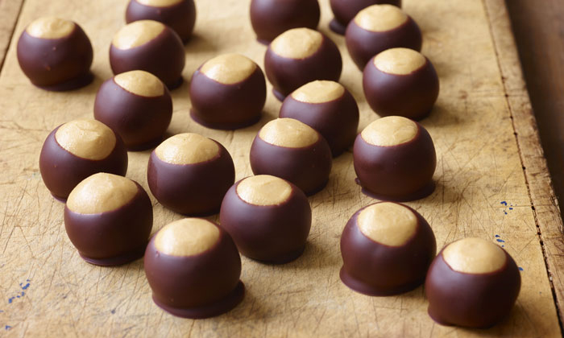
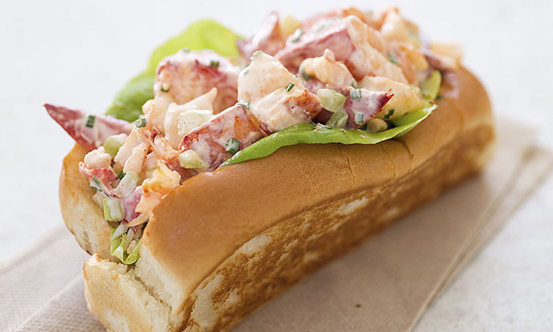
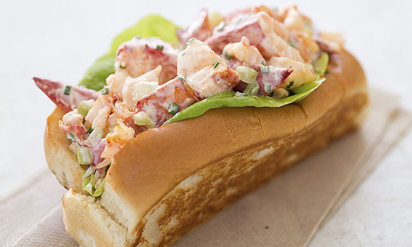

Brought by the British, Dutch, and Swedes in the 17th and 18th centuries, apple pie has since become an American classic. Modern American apple pie includes a crust on the bottom, apple filling usually spiced with cinnamon, nutmeg, and other spices, and a top crust that can vary. Traditional apple pies usually include a basic crust while other styles incorporate different crusts (Dutch apple pies can come with a crumb crust or a lattice style for example).
Ingredients
1 ½ cups all-purpose flour
½ cup vegetable oil
2 tablespoons cold milk
1 ½ teaspoons white sugar
1 teaspoon salt
6 Fuji apples, cored and sliced
¾ cup white sugar
3 tablespoons all-purpose flour
¾ teaspoon ground cinnamon
½ teaspoon ground nutmeg
½ cup all-purpose flour
½ cup white sugar
½ cup butter
Directions
Preheat oven to 350 degrees F (175 degrees C).
To Make Crust: In a large bowl, mix together 1 1/2 cups flour, oil, milk, 1 1/2 teaspoons sugar and salt until evenly blended. Pat mixture into a 9 inch pie pan, spreading the dough evenly over the bottom and up sides. Crimp edges of the dough around the perimeter.
To Make Filling: Mix together 3/4 cup sugar, 3 tablespoons flour, cinnamon, and nutmeg. Sprinkle over apples and toss to coat. Spread evenly in unbaked pie shell.
To Make Topping: Using a pastry cutter, mix together 1/2 cup flour, 1/2 cup sugar and butter until evenly distributed and crumbly in texture. Sprinkle over apples.
Put pie in the oven on a cookie sheet to catch the juices that may spill over. Bake 45 minutes.

Buckeyes
The Buckeye candy, simply referred to as buckeyes, is a common sweet in Ohio and its surrounding states. Homemade buckeyes are common but are also easily purchasable. They consist of peanut butter balls dipped in chocolate. The peak of the candy leaves a small area of peanut butter uncovered, giving it its iconic appearance mimicking the buckeye nut.
Ingredients
1 ½ cups peanut butter
1 cup butter, softened
½ teaspoon vanilla extract
6 cups confectioners’ sugar
4 cups semisweet chocolate chips
Directions
In a large bowl, mix together the peanut butter, butter, vanilla and confectioners' sugar. The dough will look dry. Roll into 1 inch balls and place on a waxed paper-lined cookie sheet.
Press a toothpick into the top of each ball (to be used later as the handle for dipping) and chill in freezer until firm, about 30 minutes.
Melt chocolate chips in a double boiler or in a bowl set over a pan of barely simmering water. Stir frequently until smooth.
Dip frozen peanut butter balls in chocolate holding onto the toothpick. Leave a small portion of peanut butter showing at the top to make them look like Buckeyes. Put back on the cookie sheet and refrigerate until serving.
Crawfish Etouffee
Crawfish etouffee is a common dish in Cajuun and Creole cuisine. Although etouffee can be made with any type of shellfish (crab, shrimp, etc.), the crawfish variant is the most popular. A sauce made from a roux and is simmered along with the crawfish. Serving it over rice is the most popular method. You can find it in New Orleans and coastal parts of Louisiana, Mississippi, Alabama, and Texas.
Ingredients
3 cups long grain white rice
6 cups water
¾ cup butter
1 large onion, chopped
1 clove garlic, chopped
¼ cup all-purpose flour
1 pound crawfish tails
2 tablespoons canned tomato sauce
1 cup water, or as needed
6 green onions, chopped
Salt and pepper to taste
Directions
Combine the rice and water in a saucepan, and bring to a boil. Cover, and reduce heat to low. Simmer for 15 to 20 minutes, until rice is tender and water has been absorbed.
While the rice is cooking, melt the butter in a large skillet over medium heat. Add the onion, and saute until transparent. Stir in the garlic, and cook for a minute. Stir in the flour until well blended. Gradually stir in the tomato sauce and water, then add the crawfish tails and bring to a simmer. Add the green onions and season with salt, pepper, and Cajun seasoning. Simmer for 5 to 10 minutes over low heat, until the crawfish is cooked but not tough. Serve over hot cooked rice.
Deep Dish Pizza
Although the pizza debate is hotly contested between Chicago and New York, we will be focusing on Chicago-style deep dish pizza. New York will get its own dish further down. The pan in which the pizza is cooked in gives it a high edge and a depth that allows for a large amount of sauce and cheese. It can also be prepared as a stuffed pizza. Both versions give the appearance of a pie more than a pizza.
Ingredients (Pizza Crust)
3 1/4 cups all-purpose flour
½ cup yellow cornmeal
1 1/4 teaspoons salt
1 Tablespoon granulated sugar
2 1/4 teaspoons Red Star Platinum yeast
1 1/4 cups slightly warm water
1/2 cup unsalted butter, divided (1/4 cup melted, 1/4 cup softened)
olive oil for coating
Ingredients (Tomato Sauce)
2 Tablespoons unsalted butter
1 small onion, grated
3/4 teaspoon salt
1 teaspoon dried oregano
1/2 teaspoon crushed red pepper flakes
3 garlic cloves, minced
one 28-ounce can crushed tomatoes
1/4 teaspoon granulated sugar
Ingredients (Toppings)
4 cups shredded mozzarella cheese
1/2 cup grated parmesan cheese
Directions
For the crust: Combine the flour, cornmeal, salt, sugar, and yeast in the bowl of your stand mixer fitted with a dough hook attachment. Give those ingredients a quick toss with your mixer on low or with a large wooden spoon. Add the warm water and 1/4 cup of melted butter. The warm water should be around 90F degrees. On low speed, beat (or stir) the dough ingredients until everything begins to be moistened. Continuing on low speed (or remove from the bowl and knead by hand if you do not own a mixer), beat the dough until it is soft and supple and gently pulls away from the sides of the bowl and falls off of the dough hook- about 4-5 minutes.
Remove the dough from the bowl and form into a ball. Lightly grease a large mixing bowl with olive oil and place the dough inside, turning it around so that all sides of the dough are coated in the oil. Cover the bowl tightly with aluminum foil and allow to rise in a warm environment for 1-2 hours or until double in size.
Once the dough is ready, lightly flour a large work surface. Remove dough from the bowl, set the bowl and aluminum foil aside (to use later). Gently punch down the dough to remove any air bubbles and roll the dough into a large 15x12 rectangle. Spread 1/4 cup of softened butter on top of the dough. Roll it up lengthwise per the photos below. Cut the dough log in half. Form the two pieces of dough into balls and place back into your greased bowl. Cover with aluminum foil and allow to rise in the refrigerator (not in a warm place) for 1 hour until they are puffy as you make the sauce.
For the sauce: Place butter in a medium saucepan over medium heat and allow it to melt. Once melted, add the grated onion, salt, oregano, and red pepper flakes. Once the onion has slightly browned after about 5 minutes, add the garlic, tomatoes, and sugar. Turn the heat down to low-medium and allow it to simmer until it's hearty, fragrant, and thick- about 30 minutes. You'll have about 2 and 1/2 cups of sauce at this point. If you have more than that, keep simmering until the amount has reduced. Remove from heat and set aside until ready to be used. You may store the sauce in a tightly covered container in the refrigerator for up to 2 days if planning to make the pizza another day. You may freeze this sauce for up to 2 months as well.
Preheat oven to 425F degrees.
Assemble the pizzas: After the dough balls have risen in the refrigerator, they should be puffy. Keep one ball of dough in the refrigerator as you work with the first one. Roll it out on a lightly floured work surface, working it into a 12-inch circle. Using your rolling pin as a guide (see photos below), place over a 9x2 inch deep dish cake pan. Using your fingers, press the dough into the cake pan. Make sure it is nice and tight fitting inside the pan. Trim any excess dough off the edges with a small knife. Repeat with 2nd dough. Brush the top edges of the dough with a little olive oil, which gives the crust a beautiful sheen. Fill each pizza with 1/2 of the cheese (about 2 cups per pizza), then your toppings. On top of those optional toppings is the sauce. Pour about 1 and 1/4 cups of sauce on top of each. Sprinkle each with 1/4 cup of grated parmesan cheese.
Bake for 20-28 minutes or until the crust is golden brown. Remove the pizzas from the oven and allow to cool in the pans placed on a wire rack for 10 minutes. After 10 minutes, slice, serve, and enjoy.
Apple Pie
Brought by the British, Dutch, and Swedes in the 17th and 18th centuries, apple pie has since become an American classic. Modern American apple pie includes a crust on the bottom, apple filling usually spiced with cinnamon, nutmeg, and other spices, and a top crust that can vary. Traditional apple pies usually include a basic crust while other styles incorporate different crusts (Dutch apple pies can come with a crumb crust or a lattice style for example).
Ingredients
1 ½ cups all-purpose flour
½ cup vegetable oil
2 tablespoons cold milk
1 ½ teaspoons white sugar
1 teaspoon salt
6 Fuji apples, cored and sliced
¾ cup white sugar
3 tablespoons all-purpose flour
¾ teaspoon ground cinnamon
½ teaspoon ground nutmeg
½ cup all-purpose flour
½ cup white sugar
½ cup butter
Directions
Preheat oven to 350 degrees F (175 degrees C).
To Make Crust: In a large bowl, mix together 1 1/2 cups flour, oil, milk, 1 1/2 teaspoons sugar and salt until evenly blended. Pat mixture into a 9 inch pie pan, spreading the dough evenly over the bottom and up sides. Crimp edges of the dough around the perimeter.
To Make Filling: Mix together 3/4 cup sugar, 3 tablespoons flour, cinnamon, and nutmeg. Sprinkle over apples and toss to coat. Spread evenly in unbaked pie shell.
To Make Topping: Using a pastry cutter, mix together 1/2 cup flour, 1/2 cup sugar and butter until evenly distributed and crumbly in texture. Sprinkle over apples.
Put pie in the oven on a cookie sheet to catch the juices that may spill over. Bake 45 minutes.


 
